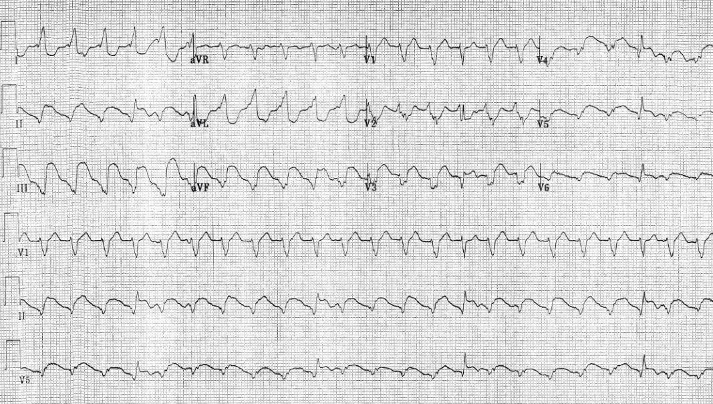
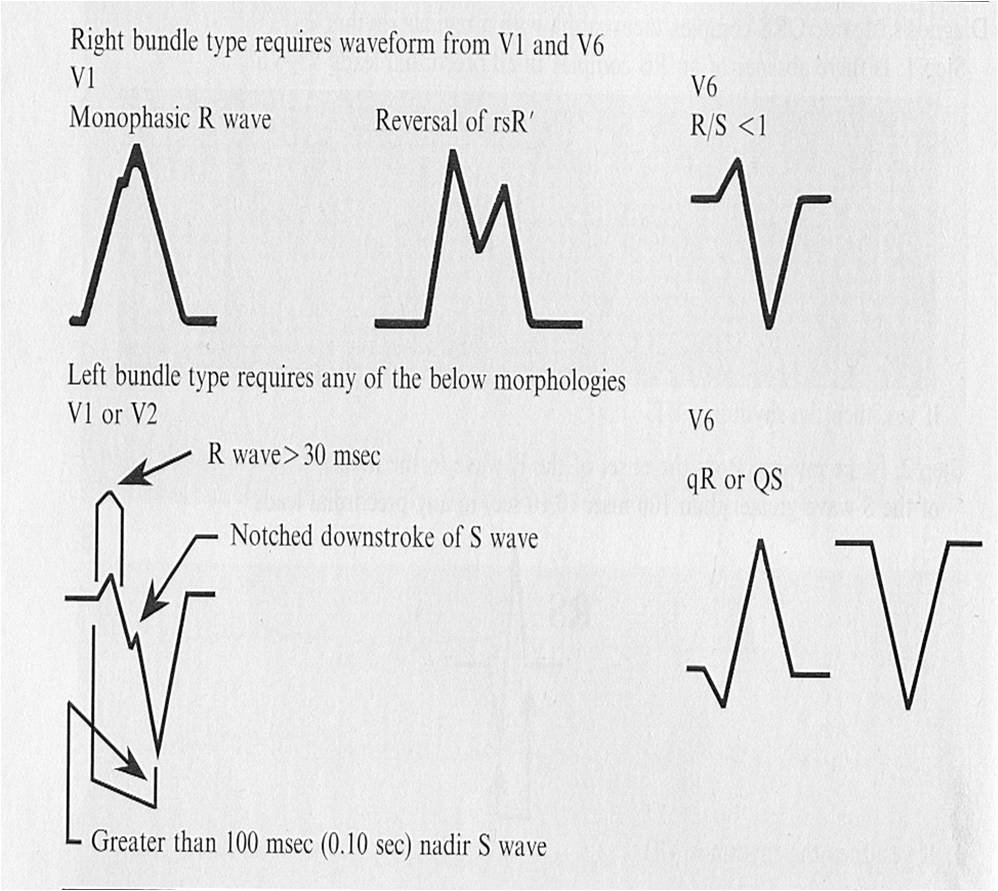
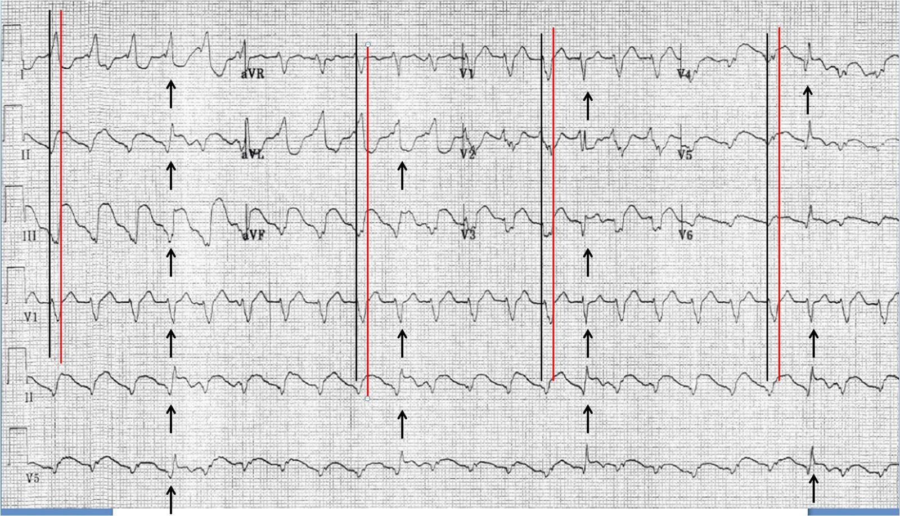
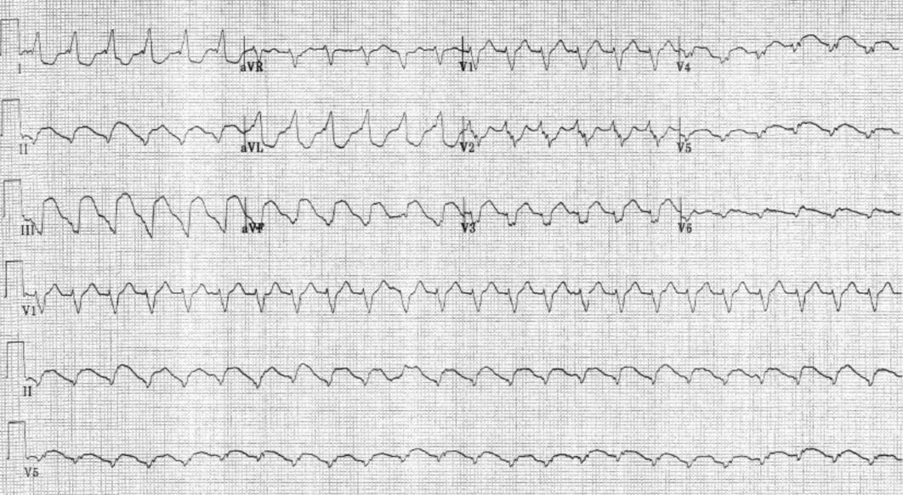
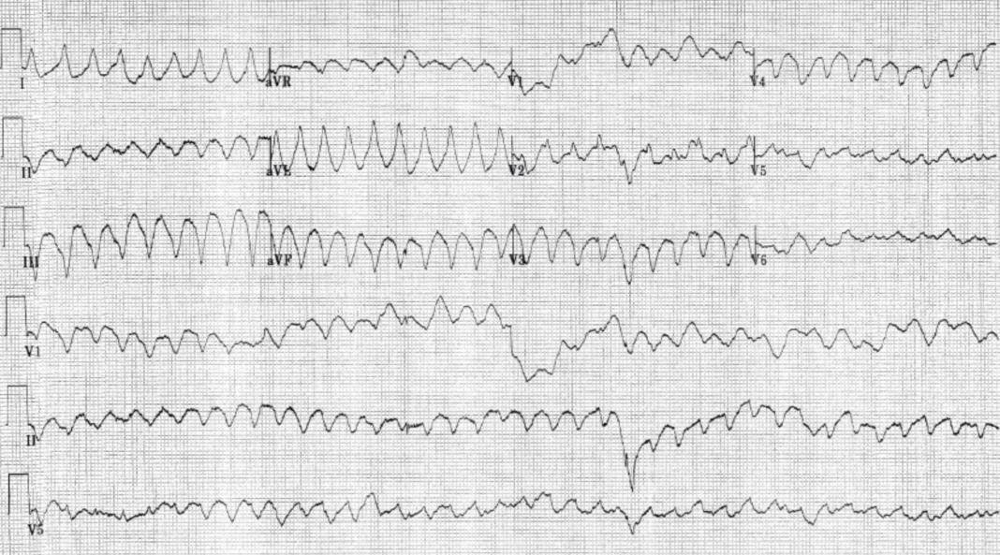
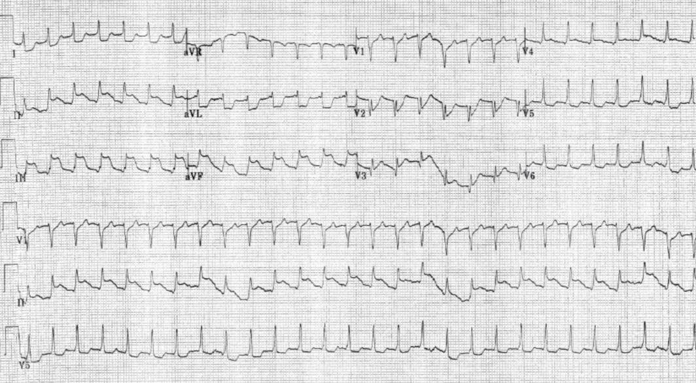

18/03/2012 — Yếu, khó thở, “DKA”, đau ngực và nhịp nhanh QRS rộng: có STEMI không?
Bản dịch tiếng Việt của bài "Weak, SOB, “DKA”, Chest Pain, and Wide Complex Tachycardia: Is there STEMI?" – Dr. Smith’s ECG Blog. Giữ nguyên toàn bộ 6 hình ảnh của bản gốc.
Ca bệnh này do một độc giả gửi đến:
Một người đàn ông 60 tuổi đến viện với “DKA” (nhiễm toan ceton do đái tháo đường), yếu mệt, khó thở và đau ngực kèm nôn. Ông phủ nhận sốt hay đau bụng.
Tần số tim khoảng 150 lần/phút, huyết áp tâm thu khoảng 90, nhịp thở khoảng 30 lần/phút, và độ bão hòa oxy qua mạch nảy khoảng 90%.
Ông “trông xám ngoét”. Kali máu là 5,2 và đường huyết 740 mg/dL.
Ông bị toan máu: pH = 7,00, pCO2 = 25, pO2 là 78.
Đây là điện tâm đồ ban đầu của ông:


Đã có rất nhiều bình luận thú vị về điện tâm đồ này. Một bình luận cho rằng V2 dường như không khớp giữa V1 và V3 và có thể là do đặt sai vị trí điện cực. Một bình luận khác chỉ ra khía
ở nhánh xuống của V1, đây là một trong các tiêu chuẩn Brugada cho VT dạng hình thái LBBB (xem các dạng Brugada bên dưới). Tôi không tin chắc 100% là VT vì QRS có vẻ ngắn, chỉ 120 ms, và ban đầu tôi nghiêng về nhịp xoang kèm dẫn truyền lệch hướng với sóng P bị che khuất, nhưng tôi đã nhận được một số phản hồi trái chiều mà bạn có thể đọc bên dưới trong phần bình luận. Điều cốt lõi là tôi không chắc đây có phải là VT hay không.
Tiêu chuẩn Brugada cho nhịp QRS rộng đều:
Trong mẫu xây dựng (derivation) của Brugada, độ nhạy và độ đặc hiệu là 99% và 97%, nhưng các nghiên cứu thẩm định sau đó không xác nhận được điều này. Ví dụ, Vereckei và cs. đã so sánh tiêu chuẩn Brugada với hai thuật toán của ông và thấy tiêu chuẩn Brugada chính xác 86%, so với độ chính xác 91% của hai thuật toán Vereckei.
1. Có phải không có phức bộ RS ở tất cả các chuyển đạo V1-V6? (QRS đồng hướng)
–Nếu có, thì là VT
2. Khoảng từ khởi đầu sóng R đến đáy sóng S có > 100 msec ở bất kỳ chuyển đạo trước tim nào không?
–Nếu có, thì nhịp là VT. Nếu không, sang bước 3
3. Có phân ly nhĩ thất không?
–Nếu có, thì là VT. Nếu không, sang bước 4
4. Có các tiêu chuẩn hình thái của VT không (xem hình bên dưới)?
–nếu có, thì là VT.
Đây là các hình thái VT theo Brugada:


Tiếp theo bạn cần xác định có ST chênh lên hay chênh xuống hay không.
Tôi đã chú thích trên chính điện tâm đồ đó ở đây:


Làm sao có thể có cả STEMI dưới-sau lẫn STEMI thành trước? Có ba khả năng:
1) đây là tắc LAD, với LAD típ III “vòng qua mỏm” (wraparound) cấp máu cho thành dưới
2) có tắc LAD hoặc tắc RCA, nhưng sốc nặng đến mức thành còn lại bị thiếu máu cục bộ do tăng nhu cầu nặng kèm ST chênh lên.
3) không có tắc huyết khối cấp, mà chỉ có thiếu máu cục bộ do tăng nhu cầu nặng vì sốc, nhịp nhanh cực độ và các chỗ hẹp mạch vành cố định.
Điện tâm đồ thứ hai tương tự nhưng không có vài nhát QRS hẹp:


Sau đó bệnh nhân trở mình, nôn và trở nên không đáp ứng. Ông được sốc điện chuyển nhịp, đặt nội khí quản, bị ngừng tim nhịp chậm, được ép tim và dùng epinephrine, và được hồi sức thành công.
Trong khoảng thời gian này, điện tâm đồ sau được ghi:


Sau hồi sức, điện tâm đồ sau được ghi:


Thông tim cho thấy tắc RCA đoạn gần và bệnh 3 nhánh mạch vành nặng. Đáng tiếc là ông đã tử vong vào ngày hôm sau.
Đây là phần bàn luận về VT:
Vince D, ngày 18 tháng Ba năm 2012, 02:26 PM
Dù tôi rất muốn mặc nhiên coi ý kiến của Dr. K. Wang là đúng, tôi vẫn có cảm giác rằng đó là các nhát hỗn hợp nào đó trong bản ghi #1. Đây là những gì đang quay cuồng trong đầu tôi lúc này:
1) Sóng lệch ban đầu của mỗi phức bộ hẹp khớp với sóng lệch ban đầu của các phức bộ rộng “anh em” của nó, điều thường gặp ở nhát hỗn hợp.
2) Mặc dù đây là một nhịp nhanh cực kỳ đều, và đúng là các nhát hẹp không đến sớm, nhưng phức bộ ngay sau một nhát hẹp luôn đến sớm hơn dự kiến một chút, và các nhát tiếp theo cũng dịch về phía trước theo thời gian tương ứng. Điều này gợi ý rằng toàn bộ cơ chế của nhịp nhanh bị ảnh hưởng bởi mỗi nhát hỗn hợp.
3) Dường như có mối liên quan giữa độ hẹp của các phức bộ và mức độ đến sớm của nhát tiếp theo. Tôi còn lâu mới là chuyên gia về những chuyện này, nhưng điểm 2 và 3 khiến tôi nghiêng về một kiểu vào lại nào đó làm cơ chế nền. Đây không chỉ là một nhát sớm đơn lẻ theo sau “sự kiện” như trong tăng dẫn truyền. Tôi mới chỉ xem qua vài ca nhịp nhanh thất có nhát hỗn hợp, nhưng hình ảnh này có vẻ khớp. Tôi chưa dành thời gian so sánh nó với các rối loạn nhịp tự động hay vào lại khác.
4) Mặc dù hình thái hơi khác, trục QRS của cơn có vẻ là nhịp nhanh thất ở bản ghi #3 rất khớp với bản ghi 1 và 2 ở cả mặt phẳng trán lẫn mặt phẳng trước tim.
5) Ở hầu hết các chuyển đạo có sóng R hoặc sóng S rõ, chúng đạt tới đỉnh hoặc đáy một cách chậm chạp.
Khi bắt đầu viết bình luận này, tôi rất hoài nghi việc các bản ghi đầu tiên là nhịp nhanh thất và chỉ định nêu ra một điểm khiến tôi thấy không khớp. Tuy nhiên, đến lúc này, tôi khá nghi ngờ rằng nhịp nhanh thất thực sự là chẩn đoán. Mọi người nghĩ sao, hay tôi đang lạc hướng?
Tôi xin lưu ý rằng nghi ngờ ban đầu của tôi xoay quanh ý tưởng các nhát hẹp là nhát hỗn hợp của các PVC từ thất trái trên nền một nhịp trên thất kèm LBBB, nhưng tôi không thể dung hòa điều đó với các dấu hiệu khác. Tôi đặc biệt muốn đó là một nhịp phó tâm thu từ thất trái, nhưng sự xuất hiện không đều của chúng đã sớm loại bỏ ý tưởng đó.
Trả lời
Steve Smith, ngày 18 tháng Ba năm 2012, 04:09 PM
Vince, bạn hoàn toàn không lạc hướng.
Lập luận của bạn hợp lý và rất có thể đây là VT. Tôi không nghĩ chẩn đoán nào là chắc chắn tuyệt đối.
Một lập luận chống lại LBBB liên quan tần số là tần số còn nhanh hơn ở điện tâm đồ cuối cùng, nhưng lại không có BBB.
Một lập luận chống lại VT là bạn sẽ phải nói rằng có hai hình thái VT khác nhau ở bệnh nhân này (điện tâm đồ thứ nhất và thứ ba). Bạn cho rằng chúng có hình thái tương tự nhau? Với tôi chúng trông rất khác nhau.
Nếu đây là các nhát hỗn hợp, và tôi hiểu các lập luận ủng hộ của bạn, thì ở cả 4 nhát, nhát trên thất đến đúng cùng lúc với nhát thất. Điều này có thể xảy ra nhưng rất bất thường. Ngay cả thấy một nhát hỗn hợp trong VT cũng đã là bất thường, huống chi là 4 nhát, nhưng dù sao đây cũng là một điện tâm đồ bất thường.
Tôi đã thử áp dụng một số quy tắc, ví dụ quy tắc Sasaki (chưa được thẩm định, và không quy tắc nào thực sự xuất sắc):
Bước 1: Có sóng R khởi đầu ở aVR không?
Điều này có nghĩa là có một sóng R lớn đơn độc (dương) (không phải sóng r nhỏ) ở aVR hay không. Dấu hiệu này cho thấy các nhát bóp xuất phát và lan truyền từ mỏm lên đáy tim, nên chắc chắn chúng phải đến từ thất, do đó là VT.
–Nếu có, thì nhịp là VT. Nếu không, sang bước 2.
Ở đây câu trả lời là KHÔNG.
Bước 2: Ở bất kỳ chuyển đạo trước tim nào, khoảng từ khởi đầu sóng R đến đáy sóng S có ≥ 100 msec (0,10 giây) không?
–Nếu có, thì nhịp là VT. Nếu không, sang bước 3.
Ở đây tôi đo được tối đa 80 ms. Vậy là KHÔNG.
Bước 3: Sóng r hoặc q khởi đầu ≥ 40 ms ở bất kỳ chuyển đạo nào?
Nếu có, điều này nghĩa là trong 40 mili giây đầu tiên trở lên, dẫn truyền chậm như khi đi qua cơ tim (thất trái, VT), chứ không phải qua các sợi dẫn truyền như trong SVT)
–Nếu có, thì là VT. Nếu không, thì là SVT. Ở đây là “Không”, do đó là SVT
Tôi chỉ thấy một chuyển đạo có sóng r hoặc q khởi đầu khoảng 40 ms, đó là aVR. Vì vậy câu trả lời ở đây cũng là KHÔNG.
Rồi bạn còn phải tính đến pH thấp, vốn có thể làm thay đổi dẫn truyền.
Dù sao đi nữa, dù có phải VT hay không, STEMI vẫn hiển nhiên. Và khi còn nghi ngờ, hãy sốc điện một nhịp nhanh ở bệnh nhân không ổn định.
Tác giả: Steve Smith